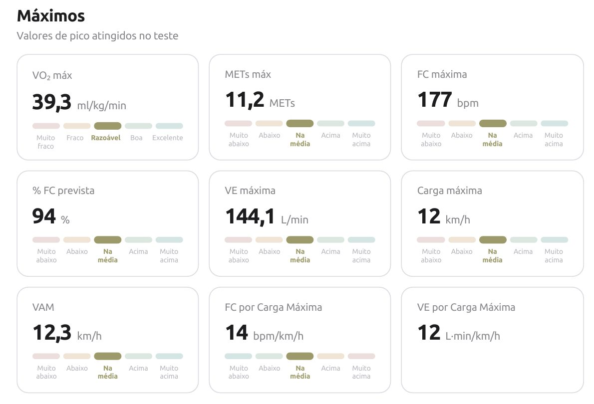
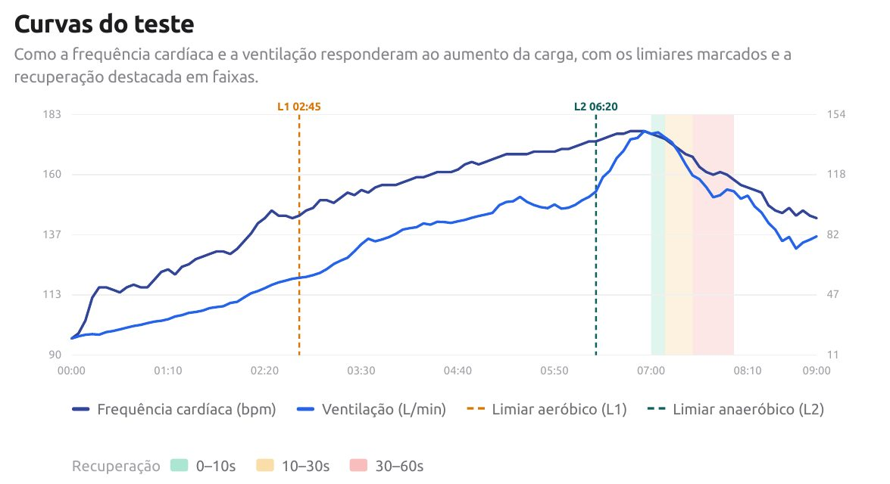

O que você leva
Um relatório que vira treino na semana seguinte.

VO₂ máx e máximos
VO₂ máx, frequência cardíaca máxima, velocidade aeróbia máxima e ventilação, cada um com a classificação para a sua idade.

Os dois limiares
Onde o treino leve vira moderado e onde o moderado vira forte. É isso que separa treinar no esforço certo de treinar no chute.

Zonas de treino e pace
Cinco zonas com frequência cardíaca, velocidade e pace, calculadas no seu teste. Dá para colocar no relógio no mesmo dia.

Combustível e recuperação
Quanto vem de carboidrato e de gordura em cada intensidade, onde fica o pico de queima de gordura e quão rápido a frequência cardíaca cai depois do esforço.
// imagens de um relatório real · nome do aluno omitido